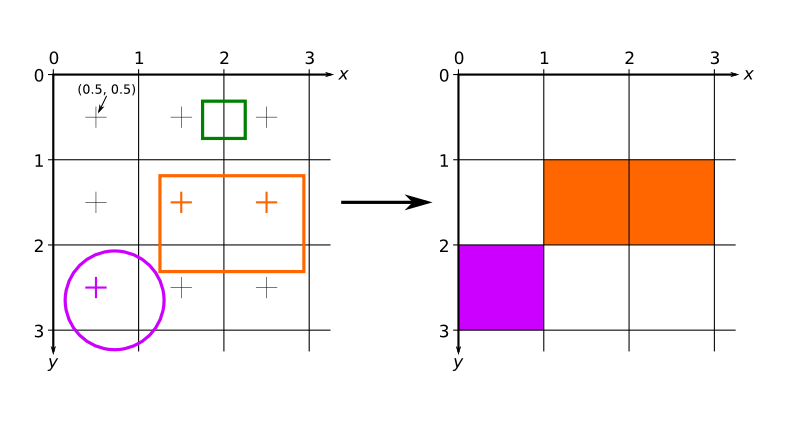
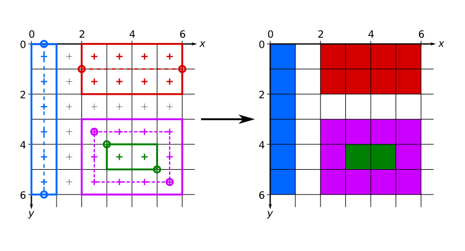

High level drawing routines encompass the most common usage of this addon: to draw geometric primitives, both smooth (variations on the circle theme) and piecewise linear. Outlined primitives support the concept of thickness with two distinct modes of output: hairline lines and thick lines. Hairline lines are specifically designed to be exactly a pixel wide, and are commonly used for drawing outlined figures that need to be a pixel wide. Hairline thickness is designated as thickness less than or equal to 0. Unfortunately, the exact rasterization rules for drawing these hairline lines vary from one video card to another, and sometimes leave gaps where the lines meet. If that matters to you, then you should use thick lines. In many cases, having a thickness of 1 will produce 1 pixel wide lines that look better than hairline lines. Obviously, hairline lines cannot replicate thicknesses greater than 1. Thick lines grow symmetrically around the generating shape as thickness is increased.
Low level drawing routines
Low level drawing routines allow for more advanced usage of the addon, allowing you to pass arbitrary sequences of vertices to draw to the screen. These routines also support using textures on the primitives with the following restrictions:
For maximum portability, you should only use textures that have dimensions that are a power of two, as not every videocard supports textures of different sizes completely. This warning is relaxed, however, if the texture coordinates never exit the boundaries of a single bitmap (i.e. you are not having the texture repeat/tile). As long as that is the case, any texture can be used safely. Sub-bitmaps work as textures, but cannot be tiled.
Some platforms also dictate a minimum texture size, which means that textures smaller than that size will not tile properly. The minimum size that will work on all platforms is 32 by 32.
A note about pixel coordinates. In OpenGL the texture coordinate (0, 0) refers to the top left corner of the pixel. This confuses some drivers, because due to rounding errors the actual pixel sampled might be the pixel to the top and/or left of the (0, 0) pixel. To make this error less likely it is advisable to offset the texture coordinates you pass to the al_draw_prim by (0.5, 0.5) if you need precise pixel control. E.g. to refer to pixel (5, 10) you'd set the u and v to 5.5 and 10.5 respectively.
Pixel-precise output
While normally you should not be too concerned with which pixels are displayed when the high level primitives are drawn, it is nevertheless possible to control that precisely by carefully picking the coordinates at which you draw those primitives.
To be able to do that, however, it is critical to understand how GPU cards convert shapes to pixels. Pixels are not the smallest unit that can be addressed by the GPU. Because the GPU deals with floating point coordinates, it can in fact assign different coordinates to different parts of a single pixel. To a GPU, thus, a screen is composed of a grid of squares that have width and length of 1. The top left corner of the top left pixel is located at (0, 0). Therefore, the center of that pixel is at (0.5, 0.5). The basic rule that determines which pixels are associated with which shape is then as follows: a pixel is treated to belong to a shape if the pixel's center is located in that shape. The figure below illustrates the above concepts:

Diagram showing a how pixel output is calculated by the GPU given the mathematical description of several shapes.
This figure depicts three shapes drawn at the top left of the screen: an orange and green rectangles and a purple circle. On the left are the mathematical descriptions of pixels on the screen and the shapes to be drawn. On the right is the screen output. Only a single pixel has its center inside the circle, and therefore only a single pixel is drawn on the screen. Similarly, two pixels are drawn for the orange rectangle. Since there are no pixels that have their centers inside the green rectangle, the output image has no green pixels.
Here is a more practical example. The image below shows the output of this code:
{ blue vertical line }
al_draw_line (0.5, 0, 0.5, 6, ColorBlue, 1);
{ red horizontal line }
al_draw_line (2, 1, 6, 1, ColorRed, 2);
{ green filled rectangle }
al_draw_filled_rectangle (3, 4, 5, 5, ColorGreen);
{ purple outlined rectangle }
al_draw_rectangle (2.5, 3.5, 5.5, 5.5, ColorPurple, 1);

Diagram showing a practical example of pixel output resulting from the invocation of several primitives addon functions.
It can be seen that lines are generated by making a rectangle based on the dashed line between the two endpoints. The thickness causes the rectangle to grow symmetrically about that generating line, as can be seen by comparing the red and blue lines. Note that to get proper pixel coverage, the coordinates passed to the al_draw_line had to be offset by 0.5 in the appropriate dimensions.
Filled rectangles are generated by making a rectangle between the endpoints passed to the al_draw_filled_rectangle.
Outlined rectangles are generated by symmetrically expanding an outline of a rectangle. With a thickness of 1, as depicted in the diagram, this means that an offset of 0.5 is needed for both sets of endpoint coordinates to exactly line up with the pixels of the display raster.
The above rules only apply when multisampling is turned off. When multisampling is turned on, the area of a pixel that is covered by a shape is taken into account when choosing what color to draw there. This also means that shapes no longer have to contain the pixel's center to affect its color. For example, the green rectangle in the first diagram may in fact be drawn as two (or one) semi-transparent pixels. The advantages of multisampling is that slanted shapes will look smoother because they will not have jagged edges. A disadvantage of multisampling is that it may make vertical and horizontal edges blurry. While the exact rules for multisampling are unspecified, and may vary from GPU to GPU, it is usually safe to assume that as long as a pixel is either completely covered by a shape or completely not covered, then the shape edges will be sharp. The offsets used in the second diagram were chosen so that this is the case: if you use those offsets, your shapes (if they are oriented the same way as they are on the diagram) should look the same whether multisampling is turned on or off.
Draws a subset of the passed vertex buffer. The vertex buffer must not be locked. Additionally, to draw onto memory bitmaps or with memory bitmap textures the vertex buffer must support reading (i.e. it must be created with the ALLEGRO_PRIM_BUFFER_READWRITE).
Parameters
vertex_buffer
Vertex buffer to draw.
texture
Texture to use, pass Nil to use only color shaded primitves.
start
Start index of the subset of the vertex buffer to draw.
end
One past the last index of the subset of the vertex buffer to draw.
atype
A member of the ALLEGRO_PRIM_TYPE enumeration, specifying what kind of primitive to draw.
Draws a subset of the passed vertex buffer. This function uses an index buffer to specify which vertices to use. Both buffers must not be locked. Additionally, to draw onto memory bitmaps or with memory bitmap textures both buffers must support reading (i.e. they must be created with the ALLEGRO_PRIM_BUFFER_READWRITE).
Parameters
vertex_buffer
Vertex buffer to draw.
texture
Texture to use, pass Nil to use only color shaded primitves.
index_buffer
Index buffer to use.
start
Start index of the subset of the vertex buffer to draw.
end
One past the last index of the subset of the vertex buffer to draw.
type
A member of the ALLEGRO_PRIM_TYPE enumeration, specifying what kind of primitive to draw. Note that ALLEGRO_PRIM_LINE_LOOP and ALLEGRO_PRIM_POINT_LIST are not supported.
A GPU index buffer that you can use to store indices of vertices in a vertex buffer on the GPU instead of uploading them afresh during every drawing operation.
Creates a vertex buffer. Can return Nil if the buffer could not be created (e.g. the system only supports write-only buffers).
Note
This is an advanced feature, often unsupported on lower-end video cards. Be extra mindful of this function failing and make arrangements for fallback drawing functionality or a nice error message for users with such lower-end cards.
Parameters
initial_data
Memory buffer to copy from to initialize the vertex buffer.
Locks a vertex buffer so you can access its data. Will return Nil if the parameters are invalid, if reading is requested from a write only buffer, or if the buffer is already locked.
Parameters
buffer
Vertex buffer to lock.
offset
Vertex index of the start of the locked range.
length
How many vertices to lock.
flags
ALLEGRO_LOCK_READONLY, ALLEGRO_LOCK_WRITEONLY or ALLEGRO_LOCK_READWRITE.
Creates an index buffer. Can return Nil if the buffer could not be created (e.g. the system only supports write-only buffers).
Note
This is an advanced feature, often unsupported on lower-end video cards. Be extra mindful of this function failing and make arrangements for fallback drawing functionality or a nice error message for users with such lower-end cards.
Parameters
index_size
Size of the index in bytes. Supported sizes are 2 for short integers and 4 for integers.
initial_data
Memory buffer to copy from to initialize the index buffer. Can be Nil, in which case the buffer is uninitialized.
A GPU index buffer that you can use to store indices of vertices in a vertex buffer on the GPU instead of uploading them afresh during every drawing operation.
A GPU index buffer that you can use to store indices of vertices in a vertex buffer on the GPU instead of uploading them afresh during every drawing operation.
Locks an index buffer so you can access its data. Will return Nil if the parameters are invalid, if reading is requested from a write only buffer and if the buffer is already locked.
Parameters
buffer
Index buffer to lock.
offset
Element index of the start of the locked range.
length
How many indices to lock.
flags
ALLEGRO_LOCK_READONLY, ALLEGRO_LOCK_WRITEONLY or ALLEGRO_LOCK_READWRITE.
A GPU index buffer that you can use to store indices of vertices in a vertex buffer on the GPU instead of uploading them afresh during every drawing operation.
A GPU index buffer that you can use to store indices of vertices in a vertex buffer on the GPU instead of uploading them afresh during every drawing operation.
A GPU index buffer that you can use to store indices of vertices in a vertex buffer on the GPU instead of uploading them afresh during every drawing operation.
Divides a simple polygon into triangles, with zero or more other simple polygons subtracted from it - the holes. The holes cannot touch or intersect with the outline of the main polygon. Simple means the polygon does not have to be convex but must not be self-overlapping.
Parameters
vertices
Interleaved array of (x, y) vertex coordinates for each of the polygons, including holes.
vertex_stride
Distance (in bytes) between successive pairs of vertices in the array.
vertex_counts
Number of vertices for each polygon. The number of vertices in the main polygon is given by vertex_counts[0] and must be at least three. Subsequent elements indicate the number of vertices in each hole. The array must be terminated with an element with value zero.
emit_triangle
A function to be called for every set of three points that form a triangle. The function is passed the indices of the points in vertices and userdata.
Draws a triangle using the software rasterizer and user supplied pixel functions. For help in understanding what these functions do, see the implementation of the various shading routines in addons/primitives/tri_soft.c. The triangle is drawn in two segments, from top to bottom. The segments are deliniated by the vertically middle vertex of the triangle. One of the two segments may be absent if two vertices are horizontally collinear.
Parmetros sin terminar de describir. Alguna explicacin habr que ponerla en la descripcin del tipo de parmetro.
Parameters
v1
The first vertex of the triangle.
v2
The second vertex of the triangle.
v3
The third vertex of the triangle.
state
A pointer to a user supplied struct, this struct will be passed to all the pixel functions.
init
Called once per call before any drawing is done. The three points passed to it may be altered by clipping.
first
Called twice per call, once per triangle segment.
step
Called once per scanline. The last parameter is set to 1 if the step is a minor step, and 0 if it is a major step.
Draws a line using the software rasterizer and user supplied pixel functions. For help in understanding what these functions do, see the implementation of the various shading routines in addons/primitives/line_soft.c. The line is drawn top to bottom.
Parameters
v1
Initial vertex of the line.
v2
Final vertex of the line.
state
A pointer to a user supplied struct, this struct will be passed to all the pixel functions.
first
Called before drawing the first pixel of the line.
step
Called once per pixel. The second parameter is set to 1 if the step is a minor step, and 0 if this step is a major step. Minor steps are taken only either in x or y directions. Major steps are taken in both directions diagonally. In all cases, the absolute value of the change in coordinate is at most 1 in either direction.
When thickness <= 0 this function computes positions of num_points regularly spaced points on an elliptical arc. When thickness > 0 this function computes two sets of points, obtained as follows: the first set is obtained by taking the points computed in the thickness <= 0 case and shifting them by thickness / 2 outward, in a direction perpendicular to the arc curve. The second set is the same, but shifted thickness / 2 inward relative to the arc. The two sets of points are interleaved in the destination buffer (i.e. the first pair of points will be collinear with the arc center, the first point of the pair will be farther from the center than the second point; the next pair will also be collinear, but at a different angle and so on).
The destination buffer dest is interpreted as a set of regularly spaced pairs of floats, each pair holding the coordinates of the corresponding point on the arc. The two floats in the pair are adjacent, and the distance (in bytes) between the addresses of the first float in two successive pairs is stride. For example, if you have a tightly packed array of floats with no spaces between pairs, then stride will be exactly 2 * sizeof (float).
Example with thickness <= 0:
CONST
NumPoints = 4;
VAR
Points: ARRAY [0..NumPoints-1, 0..1] OF AL_FLOAT;
BEGIN
al_calculate_arc (
Points,
0, 0, { Center }10, 10, { Radii }0, ALLEGRO_PI / 2, { Angles }0
);
END;
Example with thickness > 0:
CONST
NumPoints = 4;
VAR
Points: ARRAY [0..(NumPoints * 2)-1, 0..1] OF AL_FLOAT;
BEGIN
al_calculate_arc (
Points,
0, 0, { Center }10, 10, { Radii }0, ALLEGRO_PI / 2, { Angles }2
);
END;
Parameters
dest
The destination buffer.
cx
X coordinate of the center of the arc.
cy
Y coordinate of the center of the arc.
rx
Horizontal radius of the arc.
ry
Vertical radius of the arc.
start_theta
The initial angle from which the arc is calculated in radians.
delta_theta
Angular span of the arc in radians (pass a negative number to switch direction).
Calculates a Bzier spline given 4 control points. If thickness <= 0, then num_segments of points are required in the destination, otherwise twice as many are needed. The destination buffer should consist of regularly spaced (by distance of stride bytes) doublets of floats, corresponding to x and y coordinates of the vertices.
Parameters
dest
The destination buffer.
stride
Distance (in bytes) between starts of successive pairs of coordinates.
points
An array of 4 pairs of coordinates of the 4 control points.
PROCEDURE al_calculate_ribbon (dest: AL_FLOATptr; dest_stride: AL_INT; VAR points: ARRAY OF AL_FLOAT; points_stride: AL_INT; thickness: AL_FLOAT; num_segments: AL_INT); CDECL; EXTERNAL ALLEGRO_PRIMITIVES_LIB_NAME;
Calculates a ribbon given an array of points. The ribbon will go through all of the passed points. If thickness <= 0, then num_segments of points are required in the destination buffer, otherwise twice as many are needed. The destination and the points buffer should consist of regularly spaced doublets of floats, corresponding to x and y coordinates of the vertices.
Parameters
dest
Pointer to the destination buffer.
dest_stride
Distance (in bytes) between starts of successive pairs of coordinates in the destination buffer.
points
An array of pairs of coordinates for each point.
points_stride
Distance (in bytes) between starts of successive pairs of coordinates in the points buffer.
Draws a ribbon given an array of points. The ribbon will go through all of the passed points. The points buffer should consist of regularly spaced doublets of floats, corresponding to x and y coordinates of the vertices.
Parameters
points
An array of coordinate pairs (x and y) for each point.
points_stride
Distance (in bytes) between starts of successive pairs of coordinates in the points buffer.
color
Color of the spline.
thickness
Thickness of the spline, pass <= 0 to draw hairline spline.
Draws a filled simple polygon with zero or more other simple polygons subtracted from it - the holes.
PROCEDURE al_draw_filled_polygon_with_holes (VAR vertices: ARRAY OF AL_FLOAT; VAR vertex_counts: ARRAY OF AL_INT; color: ALLEGRO_COLOR); CDECL; EXTERNAL ALLEGRO_PRIMITIVES_LIB_NAME;
Draws a filled simple polygon with zero or more other simple polygons subtracted from it - the holes. The holes cannot touch or intersect with the outline of the filled polygon.
All hole vertices must use the opposite order (clockwise with y down) of the polygon vertices. All hole vertices must be inside the main polygon and no hole may overlap the main polygon.
For example:
VAR
Vertices: ARRAY [0..13] OF AL_FLOAT = (
0, 0, { Filled polygon, upper left corner. }0, 100, { Filled polygon, lower left corner. }100, 100, { Filled polygon, lower right corner. }100, 0, { Filled polygon, upper right corner. }10, 10, { Hole, upper left. }90, 10, { Hole, upper right. }90, 90{ Hole, lower right. }
);
VertexCounts: ARRAY [0..2] OF AL_INT = (
4, { number of vertices for filled polygon. }3, { number of vertices for hole. }0{ terminator. }
);
There are 7 vertices: four for an outer square from (0, 0) to (100, 100) in anti-clockwise order, and three more for an inner triangle in clockwise order. The outer main polygon uses vertices 0 to 3 (inclusive) and the hole uses vertices 4 to 6 (inclusive).
Parameters
vertices
Interleaved array of (x, y) vertex coordinates for each of the polygons, including holes.
vertex_counts
Number of vertices for each polygon. The number of vertices in the filled polygon is given by vertex_counts[0] and must be at least three. Subsequent elements indicate the number of vertices in each hole. The array must be terminated with an element with value zero.
ALLEGRO_PRIM_TEX_COORD: Texture coordinate information, can be stored only in ALLEGRO_PRIM_FLOAT_2 and ALLEGRO_PRIM_SHORT_2. These coordinates are normalized by the width and height of the texture, meaning that the bottom-right corner has texture coordinates of (1, 1).
ALLEGRO_PRIM_TEX_COORD_PIXEL: Texture coordinate information, can be stored only in ALLEGRO_PRIM_FLOAT_2 and ALLEGRO_PRIM_SHORT_2. These coordinates are measured in pixels.
ALLEGRO_PRIM_USER_ATTR: A user specified attribute. You can use any storage for this attribute. You may have at most 10 of these that you can specify by adding an index to the identifier, e.g. the first user attribute is ALLEGRO_PRIM_USER_ATTR, the second is ALLEGRO_PRIM_USER_ATTR2 and so on.
To access these custom attributes from GLSL shaders you need to declare attributes that follow this nomenclature: user_attr_# where # is the index of the attribute.
To access these custom attributes from HLSL you need to declare a parameter with the following semantics: TEXCOORD{# + 2} where # is the index of the attribute. E.g. the first attribute can be accessed via TEXCOORD2, second via TEXCOORD3 and so on.
ALLEGRO_PRIM_USER_ATTR2
ALLEGRO_PRIM_USER_ATTR3
ALLEGRO_PRIM_USER_ATTR4
ALLEGRO_PRIM_USER_ATTR5
ALLEGRO_PRIM_USER_ATTR6
ALLEGRO_PRIM_USER_ATTR7
ALLEGRO_PRIM_USER_ATTR8
ALLEGRO_PRIM_USER_ATTR9
ALLEGRO_PRIM_USER_ATTR10
ALLEGRO_PRIM_ATTR_NUM
ALLEGRO_PRIM_STORAGE = (...);
Enumerates the types of storage an attribute of a custom vertex may be stored in. Many of these can only be used for ALLEGRO_PRIM_USER_ATTR attributes and can only be accessed via shaders. Usually no matter what the storage is specified the attribute gets converted to single precision floating point when the shader is run. Despite that, it may be advantageous to use more dense storage formats (e.g. ALLEGRO_PRIM_NORMALIZED_UBYTE_4 instead of ALLEGRO_PRIM_FLOAT_4) when bandwidth (amount of memory sent to the GPU) is an issue but precision is not.
Enumerates the types of vertex attributes that a custom vertex may have.
Values
ALLEGRO_PRIM_FLOAT_2: A doublet of floats.
ALLEGRO_PRIM_FLOAT_3: A triplet of floats.
ALLEGRO_PRIM_SHORT_2: A doublet of shorts.
ALLEGRO_PRIM_FLOAT_1: A single float.
ALLEGRO_PRIM_FLOAT_4: A quad of floats.
ALLEGRO_PRIM_UBYTE_4: A quad of unsigned bytes.
ALLEGRO_PRIM_SHORT_4: A quad of shorts.
ALLEGRO_PRIM_NORMALIZED_UBYTE_4: A quad of unsigned bytes. Before being sent to the shader, each component is divided by 255. Each component of the resultant float quad ranges between 0.0 and 1.0.
ALLEGRO_PRIM_NORMALIZED_SHORT_2: A doublet of shorts. Before being sent to the shader, each component is divided by 32767. Each component of the resultant float doublet ranges between -1.0 and 1.0.
ALLEGRO_PRIM_NORMALIZED_SHORT_4: A quad of shorts. Before being sent to the shader, each component is divided by 32767. Each component of the resultant float quad ranges between -1.0 and 1.0.
ALLEGRO_PRIM_NORMALIZED_USHORT_2: A doublet of unsigned shorts. Before being sent to the shader, each component is divided by 65535. Each component of the resultant float doublet ranges between 0.0 and 1.0.
ALLEGRO_PRIM_NORMALIZED_USHORT_4: A quad of unsigned shorts. Before being sent to the shader, each component is divided by 65535. Each component of the resultant float quad ranges between 0.0 and 1.0.
ALLEGRO_PRIM_HALF_FLOAT_2: A doublet of half-precision floats. Note that this storage format is not supported on all platforms. al_create_vertex_decl will return Nil if you use it on those platforms.
ALLEGRO_PRIM_HALF_FLOAT_4: A quad of half-precision floats. Note that this storage format is not supported on all platforms. al_create_vertex_decl will return Nil if you use it on those platforms.
ALLEGRO_LINE_JOIN = (...);
See the picture for the difference. ALLEGRO_LINE_JOIN styles. The maximum miter length (relative to the line width) can be specified as parameter to the polygon functions.
See the picture for the difference. ALLEGRO_LINE_CAP styles.ALLEGRO_LINE_CAP_CLOSED is different from the others - it causes the polygon to have no caps. (And the ALLEGRO_LINE_JOIN style will determine how the vertex looks.)
ALLEGRO_PRIM_BUFFER_STREAM = $01: Hints to the driver that the buffer is written to often, but used only a few times per frame.
ALLEGRO_PRIM_BUFFER_STATIC = $02: Hints to the driver that the buffer is written to once and is used often.
ALLEGRO_PRIM_BUFFER_DYNAMIC = $04: Hints to the driver that the buffer is written to often and is used often.
ALLEGRO_PRIM_BUFFER_READWRITE = $08: Specifies that you want to be able read from this buffer. By default this is disabled for performance. Some platforms (like OpenGL ES) do not support reading from vertex buffers, so if you pass this flag to al_create_vertex_buffer or al_create_index_buffer the call will fail.
A vertex declaration. This opaque structure is responsible for describing the format and layout of a user defined custom vertex. It is created and destroyed by specialized functions.
A GPU index buffer that you can use to store indices of vertices in a vertex buffer on the GPU instead of uploading them afresh during every drawing operation.
It is passed 4 parameters, the first two are the coordinates of the initial pixel drawn in the segment. The second two are the left minor and the left major steps, respectively. They represent the sizes of two steps taken by the rasterizer as it walks on the left side of the triangle. From then on, each step will either be classified as a minor or a major step, corresponding to the above values.
ALLEGRO_DRAW_TRIANGLE_PROC = PROCEDURE (state: AL_UINTPTR_T; x1, y, x2: AL_INT); CDECL;
The function is expected to draw the scanline starting with a point specified by the first two parameters (x1, y) going to the right until it reaches the value of the third parameter (x2). All coordinates are inclusive.
Defines the size of the transformation vertex cache for the software renderer. If you pass less than this many vertices to the primitive rendering functions you will get a speed boost. This also defines the size of the cache vertex buffer, used for the high-level primitives. This corresponds to the maximum number of line segments that will be used to form them.
Generated by PasDoc 0.15.0. Generated on 2020-04-16 11:56:29.